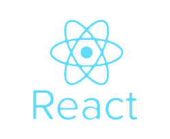
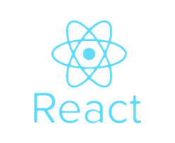

XXX
E-mail:XXXXXXXXXX@gmail.com
XXXXXXXX
University：XXXXX
This is my first web page
designed in 05/04/2019 16:00
Front-end web development, also known as client-side development is the practice of producing HTML, CSS and JavaScript for a website or Web Application so that a user can see and interact with them directly. The challenge associated with front end development is that the tools and techniques used to create the front end of a website change constantly and so the developer needs to constantly be aware of how the field is developing.
 


HTML
Hypertext Markup Language (HTML) is the standard markup language for creating web pages and web applications. With Cascading Style Sheets (CSS) and JavaScript, it forms a triad of cornerstone technologies for the World Wide Web.

CSS
Cascading Style Sheets (CSS) is a style sheet language used for describing the presentation of a document written in a markup language like HTML. CSS is a cornerstone technology of the World Wide Web, alongside HTML and JavaScript.
Framework
A software framework provides a standard way to build and deploy applications. ... Software frameworks may include support programs, compilers, code libraries, tool sets, and application programming interfaces (APIs) that bring together all the different components to enable development of a project or system.
Web Back-End
The backend of a web application is an enabler for a frontend experience. ... Backend code is run on the server, as opposed to the client. This means that backend developers not only need to understand programming languages and databases, but they must have an understanding of server architecture as well.
PHP
Hypertext Preprocessor (or simply PHP) is a general-purpose programming language originally designed for web development. It was originally created by Rasmus Lerdorf in 1994; the PHP reference implementation is now produced by The PHP Group.
Node.js
Node.js is an open-source, cross-platform JavaScript run-time environment that executes JavaScript code outside of a browser. Node.js lets developers use JavaScript to write command line tools and for server-side scripting—running scripts server-side to produce dynamic web page content before the page is sent to the user's web browser. Consequently, Node.js represents a "JavaScript everywhere" paradigm, unifying web application development around a single programming language, rather than different languages for server side and client side scripts.
ASP.NET
ASP.NET is an open-source server-side web application framework designed for web development to produce dynamic web pages. It was developed by Microsoft to allow programmers to build dynamic web sites, web applications and web services.
MVC frameworks
MVC frameworks are libraries that can be included alongside JavaScript to provide a layer of abstraction on top of the core language. Their goal is to help structure the code-base and separate the concerns of an application into three parts: Model - Represents the data of the application